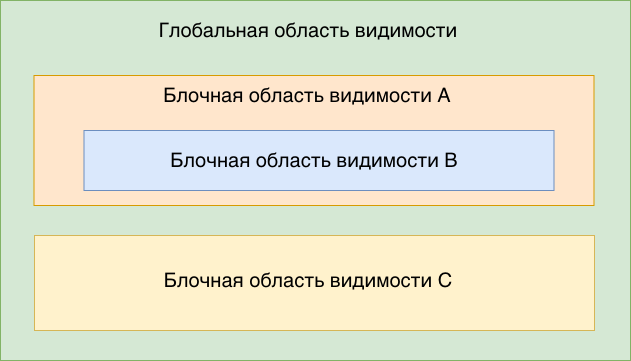

1. Область видимості
Область видимості змінних (variable scope) - доступність змінних в певному
місці коду. Є кілька областей видимості: глобальна, блокова, eval і
функції.
Глобальний контекст використовується за умовчанням. Все і вся мають доступ до змінних оголошеним в ній. Змінні оголошені в глобальному контексті уразливі, оскільки їх може змінити будь-яка ділянка коду.
Розглянемо на прикладі. Змінна valueоголошена в глобальному контексті, тобто
поза якогось блоку, і доступна в будь-якому місці після оголошення.
const value = 5;
if (true) {
console.log('Block scope: ', value); // 5
}
console.log('Global scope: ', value); // 5
Будь-яка конструкція використовує фігурні дужки {} (умови, цикли, функції й т.
п.) Створює нову локальну область видимості, і змінні, оголошені в цій області
видимості, використовуючи let або const, не доступні поза цим блоку.
if (true) {
const value = 5;
console.log('Block scope: ', value); // 5
}
console.log('Global scope: ', value); // ReferenceError: value is not defined
Глибина вкладеності областей видимості не обмежена, і всі вони буду працювати за одним принципом - область видимості має доступ до всіх змінним оголошеним вище за ієрархією вкладеності, але не може отримати доступ до змінних оголошеним у вкладених областях видимості.
Створимо кілька областей видимості й дамо їм імена для наочності.

- Глобальна є за замовчуванням, створимо в ній змінну
global - Далі використовуючи оператор
ifстворимо блочну область видимостіblock A - Усередині області видимості
block Aпоставимо ще один операторif, який створить вкладену область видимостіblock B - На одному рівні з
block A, створимо зону видимостіblock Cвсе ж таки використовуючи оператор ifif
const global = 'global';
if (true) {
const blockA = 'block A';
// Бачимо глобальну + локальну A
console.log(global); // 'global'
console.log(blockA); // block A
/*
* Змінні blockB і blockC не знайдені в доступних областях видимості.
* Буде помилка звернення до змінної.
*/
console.log(blockB); // ReferenceError: blockB is not defined
console.log(blockC); // ReferenceError: blockC is not defined
if (true) {
const blockB = 'block B';
// Бачимо глобальну + внутрішню A + локальну B
console.log(global); // global
console.log(blockA); // block A
console.log(blockB); // block B
/*
* Змінна blockC не знайдена в доступних областях видимості.
* Буде помилка звернення до змінної.
*/
console.log(blockC); // ReferenceError: blockC is not defined
}
}
if (true) {
const blockC = 'block C';
// Бачимо глобальну + локальну C
console.log(global); // global
console.log(blockC); // block C
/*
* Змінні blockA і blockB не знайдені в доступних областях видимості.
* Буде помилка звернення до змінної.
*/
console.log(blockA); // ReferenceError: blockA is not defined
console.log(blockB); // ReferenceError: blockB is not defined
}
// Бачимо тільки глобальну
console.log(global); // global
/*
* Змінні blockA, blockB і blockC не знайдені в доступних областях видимості.
* Буде помилка звернення до змінної.
*/
console.log(blockA); // ReferenceError: blockA is not defined
console.log(blockB); // ReferenceError: blockB is not defined
console.log(blockC); // ReferenceError: blockC is not defined
Будьте уважні при використанні блокових областей видимості та змінних оголошених в них. Саме ця помилка, разом з неуважністю, часто стає головним болем новачка.